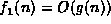
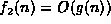
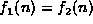
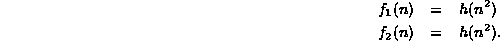
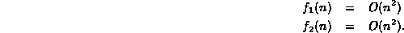
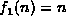
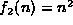
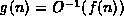
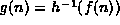

Data Structures and Algorithms
with Object-Oriented Design Patterns in Java
Data Structures and Algorithms
with Object-Oriented Design Patterns in JavaUnfortunately, the way we write big oh notation can be misleading to the naıve reader. This section presents two fallacies which arise because of a misinterpretation of the notation.
Fallacy Given that  and , then .
Consider the equations:

Clearly, it is reasonable to conclude that .
However, consider these equations:

It does not follow that .
For example,  and  are both  , but they are not equal.
, but they are not equal.
Fallacy If f(n)=O(g(n)), then .
Consider functions f, g, and h, such that f(n)=h(g(n)).
It is reasonable to conclude that 
provided that  is an invertible function.
However, while we may write f(n)=O(h(n)),
the equation is nonsensical and meaningless.
Big oh is not a mathematical function,
so it has no inverse!
is an invertible function.
However, while we may write f(n)=O(h(n)),
the equation is nonsensical and meaningless.
Big oh is not a mathematical function,
so it has no inverse!
The reason for these difficulties is that
we should read the notation  as
``f(n) is big oh n squared''
not
``f(n) equals big oh of n squared.''
The equal sign in the expression does not really denote mathematical equality!
And the use of the functional form,
as
``f(n) is big oh n squared''
not
``f(n) equals big oh of n squared.''
The equal sign in the expression does not really denote mathematical equality!
And the use of the functional form,  ,
does not really mean that O is a mathematical function!
,
does not really mean that O is a mathematical function!
 Copyright © 1998 by Bruno R. Preiss, P.Eng. All rights reserved.
Copyright © 1998 by Bruno R. Preiss, P.Eng. All rights reserved.